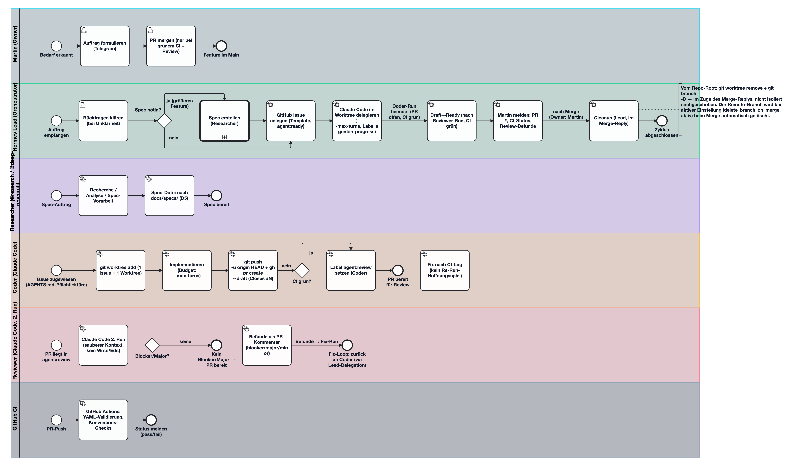

KI-gestützte Software-Entwicklung mit GitHub als Rückgrat · Solo-Entwickler + Agententeam · Stand 2026-10-26 · 30 Pipeline-Zyklen validiert
Aktiver Workflow: claude-pipeline
%%{init: {"flowchart":{"curve":"basis","nodeSpacing":60,"rankSpacing":70}}}%%
flowchart TB
subgraph OG1["👤 Mensch"]
MARTIN["👤 Martin
Owner · einziger Merge-Zugriff
Telegram-DM / repo-Thread"]:::martin
end
subgraph OG2["🧠 Orchestrierung"]
LEAD["🧠 Hermes Lead (Orchestrator)
Telegram-Bot · default-Profil
Nimmt Aufträge · legt Issues an
delegiert · Draft→Ready · Cleanup"]:::lead
end
subgraph OG3["⚒️ Ausführung"]
RESEARCH["🔬 Researcher
Hermes @research / @deep-research
Recherche · Specs → docs/specs/"]:::research
CODER["⚒️ Coder — Claude Code
headless · 1 Worktree pro Issue
Implementiert · Draft-PR
Budget: --max-turns"]:::coder
REVIEW["🔍 Reviewer — Claude Code
2. Run · sauberer Kontext
Befunde als PR-Kommentare
kein Write/Edit · max 2 Schleifen"]:::review
end
subgraph OG4["🐙 Infrastruktur"]
CI["⚙️ GitHub CI
YAML-Validierung
Konventions-Checks
grün = Merge-Voraussetzung"]:::ci
GH["🐙 GitHub
Issues = Auftragsqueue (Templates)
Labels: ready → in-progress → review
Branches: docs/<nr>-<slug>
AGENTS.md = Repo-Contract"]:::github
end
MARTIN -->|"Auftrag"| LEAD
LEAD -->|"Spec-Auftrag"| RESEARCH
LEAD -->|"Delegation"| CODER
RESEARCH -.->|"Spec-Datei"| CODER
CODER -->|"Draft-PR (Closes #N)"| REVIEW
CODER --> GH
REVIEW -->|"Befunde"| CODER
CI -.->|"pass/fail"| CODER
GH -.-> CI
LEAD -->|"Meldung: PR fertig, CI grün"| MARTIN
MARTIN -->|"Merge (D1)"| GH
classDef martin fill:#082f3a,stroke:#22d3ee,stroke-width:1.5px,color:#ecfeff
classDef lead fill:#052e24,stroke:#34d399,stroke-width:1.5px,color:#ecfdf5
classDef research fill:#1e1538,stroke:#a78bfa,stroke-width:1.5px,color:#f5f3ff
classDef coder fill:#2b1d07,stroke:#fbbf24,stroke-width:1.5px,color:#fffbeb
classDef review fill:#2e0f1a,stroke:#fb7185,stroke-width:1.5px,color:#fff1f2
classDef ci fill:#111827,stroke:#94a3b8,stroke-width:1.5px,color:#f1f5f9
classDef github fill:#0b1220,stroke:#e2e8f0,stroke-width:1.5px,stroke-dasharray:4 3,color:#e2e8f0
Mensch · Owner · einzige Merge-Autorität
Hermes default-Profil am Telegram-Bot
Hermes @research (schnell) / @deep-research (orchestriert)
Claude Code headless · 1 Worktree pro Issue
Claude Code · 2. Run · sauberer Kontext
GitHub Actions · automatisiertes QS-Gate
%%{init: {"flowchart":{"nodeSpacing":40,"rankSpacing":55,"curve":"basis","useMaxWidth":false}}}%%
flowchart TD
subgraph SL1["👤 Martin — Owner"]
direction LR
M1["Auftrag formulieren
(Telegram)"]:::martin
M2["PR mergen (D1)
nur bei grünem CI + Review"]:::martin
M3(["✓ Feature im Main"]):::martin
end
subgraph SL2["🧠 Hermes Lead — Orchestrator"]
direction LR
L1["Klären"]:::lead
L2{"Spec nötig?"}:::gate
L3["Spec erstellen
(Researcher)"]:::research
L4["Issue anlegen
agent:ready"]:::lead
L5["Delegieren
agent:in-progress"]:::lead
L6["Draft→Ready
nach Review+CI"]:::lead
L7["Melden
PR #N · CI-Status"]:::lead
L8["Cleanup
Worktree + Branch"]:::lead
end
subgraph SL3["⚒️ Coder — Claude Code · Worktree"]
direction LR
C1["Worktree anlegen
1 Issue = 1 Worktree"]:::coder
C2["Implementieren
--max-turns Budget"]:::coder
C3["PR öffnen
Closes #N"]:::coder
C4{"CI grün?"}:::gate
C5["Fix nach CI-Log"]:::coder
C6["agent:review setzen
(bei D7: Lead)"]:::coder
end
subgraph SL4["🔍 Reviewer + CI — max 2 Schleifen"]
direction LR
R1["Reviewer-Run
sauberer Kontext"]:::review
R2{"Blocker/Major?"}:::gate
R3["Befunde posten
blocker/major/minor"]:::review
CIC["GitHub Actions
YAML · Konventionen · pass/fail"]:::ci
end
subgraph SL5["🏁 D7-Ausnahme + Abschluss"]
direction LR
D7["D7-Fall: Run abgebrochen?
Lead prüft Worktree · git status --long"]:::d7
F1["Lead meldet an Martin
PR #N · CI grün · Befunde"]:::lead
end
M1 --> L1
L1 --> L2
L2 -->|"ja (großes Feature)"| L3
L2 -->|"nein (direkt)"| L4
L3 --> L4
L4 --> L5
L5 -->|"Delegation"| C1
C1 --> C2
C2 --> C3
C3 --> C4
C4 -->|"nein"| C5
C5 --> C2
C4 -->|"ja"| C6
C6 -.->|"Befunde am PR"| R2
R1 --> R2
R2 -->|"Befunde"| R3
R3 -.->|"Fix-Run (max 2 Schleifen)"| C2
R2 -->|"keine"| L6
CIC -.->|"pass/fail"| C4
D7 -.->|"Lead vollendet"| L7
L7 --> F1
F1 --> M2
classDef martin fill:#082f3a,stroke:#22d3ee,stroke-width:1.5px,color:#ecfeff
classDef lead fill:#052e24,stroke:#34d399,stroke-width:1.5px,color:#ecfdf5
classDef research fill:#1e1538,stroke:#a78bfa,stroke-width:1.5px,color:#f5f3ff
classDef coder fill:#2b1d07,stroke:#fbbf24,stroke-width:1.5px,color:#fffbeb
classDef review fill:#2e0f1a,stroke:#fb7185,stroke-width:1.5px,color:#fff1f2
classDef ci fill:#111827,stroke:#94a3b8,stroke-width:1.5px,color:#f1f5f9
classDef d7 fill:#0c1a33,stroke:#60a5fa,stroke-width:1.5px,color:#eff6ff
classDef gate fill:#1e293b,stroke:#cbd5e1,stroke-width:1.5px,color:#f8fafc
Farben dieses Diagramms: cyan = CI/Regel 1, violet = DSL-Dateien, amber = Validierung, rot = Befunde, grün = OK — abweichend von der seitenweiten Legende.
%%{init: {"flowchart":{"nodeSpacing":45,"rankSpacing":60,"curve":"basis","useMaxWidth":false}}}%%
flowchart TB
subgraph DSL1["📜 DSL — workflow/<id>/"]
direction LR
REG["registry.yaml
Instanzen · genau ein active: true"]:::dslfile
ROLES["workflow/<id>/roles.yaml
Rollen · Tool-Sets · Budgets"]:::dslfile
STATES["workflow/<id>/states.yaml
Labels · Übergänge"]:::dslfile
RULES["workflow/<id>/rules.yaml
Regeln D1–D8 · Fakten"]:::dslfile
PIPE["workflow/<id>/pipeline.yaml
Schritte der Pipeline"]:::dslfile
end
subgraph DSL2["⚙️ scripts/validate-workflow.mjs"]
direction TB
E1["Ebene 1 — Schema (ajv)
registry.yaml + 4 Instanz-Dateien
· Referenzauflösung"]:::script
E2["Ebene 2 — Konsistenz-Linter
2a Wildcard-Sicherheit · 2b Zustandsmaschine
2c D2-Prosa ↔ roles.yaml · 2d Regeln · 2e Pipeline"]:::script
ST["Selbsttest
>150 Fälle, beim Ausbau wachsend · läuft bei jedem Lauf mit
Melder + Gegenrichtung"]:::script
end
subgraph DSL3["📄 Generierung — render-workflow.mjs"]
direction LR
GEN["render-workflow.mjs --check
generiert == eingecheckt"]:::script
WF["WORKFLOW.md
Rollen-, Label-, Übergangs-,
Regel- und Pipeline-Tabelle"]:::agents
AG["AGENTS.md
aktiv-Block zwischen
dsl:active-workflow-Markern"]:::agents
end
subgraph DSL4["🏁 Ergebnis"]
direction LR
OK(["exit 0 — OK
Warnungen erlaubt
CI-Beleg = DSL-Beleg"]):::ok
FAIL["exit 1 — Befunde
verbotener-eintrag · wildcard-mittig
fakt-quelle-abweichend
ueberschrift-fehlt · ueberschrift-satzpunkt"]:::befund
FIX["Befunde beheben · neu pushen
kein agent:review, solange rot"]:::befund
end
subgraph DSL5["🐙 CI + Regel 1"]
direction LR
CIJ["CI-Job workflow-dsl
pull_request + push auf main
2 Prüfschritte · NODE_PATH
Validator + render-workflow --check"]:::ci
SELF["DSL_self_validation
Regel 1 in rules.yaml
jede Workflow-Änderung
braucht einen grünen Lauf"]:::regel
end
SELF -.->|"fordert grünen Lauf"| CIJ
CIJ -->|"Schritt 1"| E1
CIJ -->|"Schritt 2"| GEN
REG --> E1
ROLES --> E1
STATES --> E1
RULES --> E1
PIPE --> E1
ROLES -.-> GEN
STATES -.-> GEN
PIPE -.-> GEN
E1 -->|"Schema erfüllt"| E2
ST -.->|"prüft die Prüfer"| E2
GEN -->|"Vergleich"| WF
GEN -->|"Vergleich"| AG
AG -.->|"D2-Prosa (2c)"| E2
E2 --> OK
E2 --> FAIL
GEN -.->|"Abweichung"| FAIL
FAIL --> FIX
classDef dslfile fill:#1e1538,stroke:#a78bfa,stroke-width:1.5px,color:#f5f3ff
classDef script fill:#2b1d07,stroke:#fbbf24,stroke-width:1.5px,color:#fffbeb
classDef agents fill:#0b1220,stroke:#e2e8f0,stroke-width:1.5px,stroke-dasharray:4 3,color:#e2e8f0
classDef ci fill:#111827,stroke:#94a3b8,stroke-width:1.5px,color:#f1f5f9
classDef ok fill:#052e24,stroke:#34d399,stroke-width:1.5px,color:#ecfdf5
classDef befund fill:#2e0f1a,stroke:#fb7185,stroke-width:1.5px,color:#fff1f2
classDef regel fill:#082f3a,stroke:#22d3ee,stroke-width:1.5px,color:#ecfeff
Zweiter Workflow (Issue #58): dieselbe Pipeline wie claude-pipeline, aber Coder- und Reviewer-Rolle laufen als Hermes-Sub-Agenten (delegate_task, Lead-delegiert, isolierter Kontext). Farben wie im Diagramm darüber; Ampel-Logik: amber = Sub-Agent-Runs, rot = Review, grün = OK.
%%{init: {"flowchart":{"nodeSpacing":45,"rankSpacing":60,"curve":"basis","useMaxWidth":false}}}%%
flowchart TB
subgraph HP1["🧠 Hermes Lead — Orchestrator"]
direction LR
H1["Issue anlegen
agent:ready"]:::lead
H2["Delegieren
delegate_task
agent:in-progress"]:::lead
H3["Delegationsanweisung
Tool-Abgrenzung · D2-Guards
Budget: max_work_steps"]:::regel
end
subgraph HP2["🤖 Hermes-Sub-Agenten (delegate_task · isolierter Kontext)"]
direction LR
HC["⚒️ Sub-Agent Coder
Implementieren · Commits
Draft-PR: Closes #N
CI-Beleg am PR"]:::coder
HR["🔍 Sub-Agent Reviewer
2. Run · sauberer Kontext
Befunde als PR-Kommentare
keine Edits"]:::review
HX["Sync-Run (D8)
main holen · Fix-Run"]:::coder
end
subgraph HP3["⚙️ CI + Review-Schleife — max 2"]
direction LR
HCI["GitHub Actions
workflow-dsl · pass/fail"]:::ci
HG{"Befunde?"}:::gate
end
subgraph HP4["🏁 Abschluss"]
direction LR
HO["Lead: Draft→Ready
meldet PR #N · CI grün"]:::lead
HM(["👤 Martin mergt (D1)
Cleanup · Switch zurück möglich"]):::martin
end
H1 --> H2
H3 -.->|"verbindliche Regeln im Task-Kontext
kein maschinelles Tool-Zwangsniveau"| HC
H2 -->|delegate_task| HC
HC -->|"agent:review"| HR
HC --> HG
HX -.->|"D8-Basis / Fix-Run"| HC
HCI -.->|"pass/fail"| HG
HG -->|"Befunde"| HR
HR -.->|"Fix-Run (max 2 Schleifen)"| HC
HG -->|"keine"| HO
HO --> HM
classDef martin fill:#082f3a,stroke:#22d3ee,stroke-width:1.5px,color:#ecfeff
classDef lead fill:#052e24,stroke:#34d399,stroke-width:1.5px,color:#ecfdf5
classDef coder fill:#2b1d07,stroke:#fbbf24,stroke-width:1.5px,color:#fffbeb
classDef review fill:#2e0f1a,stroke:#fb7185,stroke-width:1.5px,color:#fff1f2
classDef ci fill:#111827,stroke:#94a3b8,stroke-width:1.5px,color:#f1f5f9
classDef gate fill:#1e293b,stroke:#cbd5e1,stroke-width:1.5px,color:#f8fafc
classDef regel fill:#082f3a,stroke:#22d3ee,stroke-width:1.5px,color:#ecfeff
Eingebettet aus docs/workflow.png (bestehendes Rendering, kein neues Rendern).
